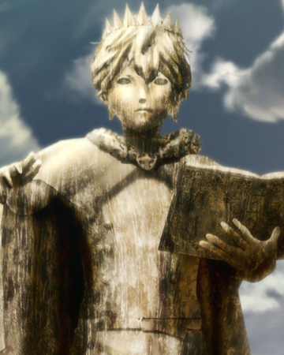

Cuando la humanidad estaba a punto de caer por un demonio antiguo , un único mago la salvó y lo derrotó. Más tarde ese mago se convirtió en una leyenda y fue nombrado Rey mago. Después de ese suceso, el Reino del Trébol gozó de paz a través de generaciones de reyes magos y nueve órdenes mágicas subordinadas. Asta y Yuno son huérfanos que fueron criados juntos desde su nacimiento después de ser abandonados en un orfanato de la iglesia de Hage, ubicada en la zona olvidada del Reino del Trébol al mismo tiempo. En un mundo donde todos tienen Poder Mágico (魔力 Maryoku?), cuya habilidad de controlarlo es de manera natural: Asta es la única persona nacida sin magia, lo que lo lleva a entrenar físicamente como compensación. Por el contrario, Yuno nació como un prodigio con un inmenso poder mágico y el talento para controlarlo. A los 15 años, Asta y Yuno tienen la capacidad de convertirse en magos conocidos como Caballeros Mágicos al recibir sus respectivos grimorios, con los que se canaliza todo el poder mágico. A Yuno se le otorga el grimorio con un trébol de cuatro hojas, que canaliza la magia de viento, que fue el utilizado por el primer rey mago del reino, mientras que Asta no recibe ninguno. Sin embargo, cuando un ladrón incapacita a Yuno para intentar vender su grimorio en el mercado negro, Asta convoca su propio grimorio, un extraño grimorio deslucido que contiene un trébol de cinco hojas, que contiene la extraña y misteriosa Anti-Magia (que le permite cancelar todos los efectos mágicos), para vencerlo. La historia luego sigue a los dos hermanos adoptivos, separados dentro de sus órdenes de caballería, mientras construyen una rivalidad amistosa para tratar de convertirse en el Rey Mago; no sin antes ser los caballeros mágicos más fuertes del reino.
